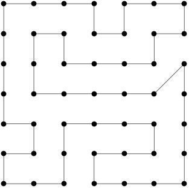

by Morton Goldberg
A salesman wants to call on his customers, each of which is located in a different city. He asks you to prepare an itinerary for him that will minimize his driving miles. The itinerary must take him to each city exactly once and return him to his starting point. Can you write a Ruby program to generate such an itinerary?
This problem is famous and known to be NP-complete. So how can you be expected to solve it as a weekend Ruby Quiz project? It's unreasonable isn't it? Yes, it is, unless the conditions are relaxed somewhat.
First, let's restrict the problem to a space for which the solution is known: a grid of points as defined by the following Ruby code:
# spaced on the unit lattice with (0, 0) at the lower left corner and
# (n-1, n-1) at the upper right.
class Grid
attr_reader :n, :pts, :min
def initialize(n)
raise ArgumentError unless Integer === n && n > 1
@n = n
@pts = []
n.times do |i|
x = i.to_f
n.times { |j| @pts << [x, j.to_f] }
end
# @min is length of any shortest tour traversing the grid.
@min = n * n
@min += Math::sqrt(2.0) - 1 if @n & 1 == 1
end
end
Second, let's relax the requirement that the itinerary be truly minimal. Let's only require that it be nearly minimal, say, within 5%. Now you can tackle the problem with one of several heuristic optimization algorithms which run in polynomial time. In particular, you could use a genetic algorithm (GA).
Genetic Algorithm (GA)
From one point of view a GA is a stochastic technique for solving an optimization problem--for finding the extremum of a function. From another point of view it is applied Darwinian evolution.
To see how a GA works, let's look at some pseudocode.
Step 1. Generate a random initial population of itineraries.
Step 2. Replicate each itinerary with some variation.
Step 3. Rank the population according to a fitness function.
Step 4. Reduce the population to a prescribed size,
keeping only the best ranking itineraries.
Step 5. Go to step 2 unless best itinerary meets an exit criterion.
Simple, isn't it? But perhaps some discussion will be useful.
Step 1. You can get the points you need to generate a new random itinerary by calling pts on an instance grid of the Grid class shown above.
Step 2. GAs apply what are called genetic operators to replicas of the population to produce variation. Genetic operators are usually referred to by biological sounding names such mutation, recombination, or crossover. Recombination means some kind of permutation. In my GA solution of the problem proposed here, I used two recombination operators, exchange and reverse. Exchange means cutting an itinerary at three points (yielding four fragments) and swapping the middle two fragments. Reverse means cutting an itinerary at two points (yielding three fragments) and reversing the order of the middle fragment.
Step 3. The fitness function for the traveling salesman problem can be the total distance traversed when following an itinerary (including the return to the starting point), or it can be a related function that reaches its minimum for exactly the same itineraries as does the total distance function.
A GA can be rather slow, but has the advantage of being easy to implement. My experience with problem I have proposed is that a GA can produce a solution meeting the 5% criterion reasonably quickly and that it can find an exact solution if given enough time.
An Exact Solution
To give you an idea of how a solution looks when plotted, here is a picture of a minimal tour on a 7 X 7 grid.

This exact solution was found by my Ruby GA solver in about two minutes.
Wikipedia Links
Two Wikipedia pages have a great deal of relevant information on the topic of this quiz.
Quiz Summary
This time, we tried to put the focus on how you solved the quiz, instead of the solution itself. A great aspect of genetic algorithms is that you really don't need to know much about the problem domain in order to find a workable solution for it. That comes with tradeoffs though, naturally. It takes longer to find a solution this way and there are no guarantees it will be great when you do settle on something. Still, I think it's very valuable to examine just how these solutions work.
I'm going to show Joseph Seaton's code here. It's smaller than many of the solutions submitted, but still quite approachable. It finds good answers pretty quickly on my box.
Here's how the code begins:
require 'rubygems'
require 'rvg/rvg'
require 'grid'
include Magick
class GeneticGridGuess
def initialize grid
@grid, @min = grid.pts, grid.min*1.05
puts "Minumum time (within 5%): #{@min}"
@len, @seg = @grid.length, (@grid.length*0.3).ceil
@psize = Math.sqrt(@len).ceil*60
@mby = (@psize/20).ceil
@pop = []
@psize.times do
i = @grid.sort_by { rand }
@pop << [dist(i),i]
end
popsort
end
# ...
When I first read the requires for this script, I didn't know what rvg was. I went searching for the library I needed to install and couldn't easily find one. For those that don't know, rvg is a feature of RMagick that provides you with vector-based drawing tools. If you have an up-to-date RMagick install, you have rvg as well.
The constructor in this code should be pretty easy to digest. It pulls the point list and minimum path for a passed Grid, careful to increase the minimum to our looser goal. It also pulls the Grid.length() and uses that to build a size for mutated segments. The @psize holds the population size our selections will be made from and @mby (for "multiply by," I assume) is a multiplier used in the reproduction process. The rest of the code here just builds the initial population from random sorts of the points.
Next, let's have a peek at the two helper methods used above:
def dist i
#Uninteresting but fast as I can make it:
t = 0
g = i+[i[0]]
@len.times do |e|
t += Math.sqrt((g[e][0]-g[e+1][0])**2+(g[e][1]-g[e+1][1])**2)
end
t
end
def popsort
@pop = @pop.sort_by { |e| e[0] }
end
# ...
The dist() method provides a standard Euclidean Distance measure and popsort() just sorts the current population by this measure. The thing to note here is that the population is always stored as a dist(), followed by the path. This prevents needing to recalculate the dist() multiple times.
The final two methods of this class do the real work in the solution:
def solve
while iter[0] > @min
puts @pop[0][0]
end
@pop[0]
end
def iter
@pop = (@pop[0..20]*@mby).collect do |e|
n = e[1].dup
case rand(10)
when 0..6 #Guesses concerning these values
seg = rand(@seg)
r = rand(@grid.length-seg+1)
n[r,seg] = n[r,seg].reverse
when 7
n = n.slice!(rand(@grid.length)..-1) + n
when 8..9
r = []
3.times { r << rand(@grid.length)}
r.sort!
n = n[0...r[0]] + n[r[1]...r[2]] + n[r[0]...r[1]] + n[r[2]..-1]
end
[dist(n),n]
end
popsort
@pop[0]
end
end
# ...
The solve() method drives the process, continuing the search until a solution drops below our minimum accepted fitness measure. Many solutions also used time as a cut-off factor and I would recommend that approach. Genetic algorithms don't guarantee a solution and even when they do find one it could take quite some time.
The iter() method moves the population forward one generation. The process is simple: select the best 20 members of the current population, multiply that set by some factor, mutate each member of the expanded set in some way, and save the result as our new population. The population is then resorted and the best returned.
I believe there's a small error in that code. Since the whole population is mutated, it is possible that a better solution could be discarded and replaced by inferior solutions. The code should probably also save the best solution seen thus far, just in case.
The mutations are largely from the quiz description. 70% of the time a reverse mutation is performed and 20% of the time an exchange mutation. 10% of the time, a variation of the exchange is used where just two random segments are traded.
These are all asexual mutations, but some did try crossovers. An ordered crossover works pretty well in this case. With that approach you select two parents, pick a crossover point in the path, and build two offspring from transforms around that point. The first child has the points of the first parent up to the crossover point, but the later points are reordered to match the second parent. This is reversed in the second child.
With the framework in place, we're ready to see the application code:
gridsize = ARGV[0] ? ARGV[0].to_i : (print "Grid size: "; STDIN.gets.to_i)
grid = GeneticGridGuess.new(Grid.new(gridsize)).solve
puts "In time #{grid[0]}:"
grid[1].each do |e|
print "#{e[0].to_i},#{e[1].to_i} "
end
puts
# ...
The first line of this code pulls the grid size from a command-line argument or STDIN. The second line builds the Grid, creates the solver, and puts it to work. The rest of the code just prints the points of the best solution.
Though that's enough to give us some boring numerical output, Joseph also had code to draw pretty pictures:
if !ARGV[1]
image = RVG.new(gridsize*100,gridsize*100) do |canvas|
canvas.background_fill = 'white'
cgrid = grid[1].collect do |e|
[e[0]*100+10,e[1]*100+10]
end
cgrid.each do |point|
canvas.circle(5,point[0],point[1]).styles(:fill=>'black')
end
canvas.polygon(*cgrid.flatten).
styles(:stroke=>'black', :stroke_width=>2, :fill=>'none')
end.draw
image.display rescue image.write("#{gridsize}x#{gridsize}tour.jpg")
end
I made a small change in this code so it would draw the picture to disk when the X Window library needed for display is not available.
This code is run if a second command-line argument is not given to disable it. It works by creating a canvas, plotting each point in the path on that canvas, and finally adding a polygon to represent the path found by the solver. As you can see, RMagick's RVG class simplifies the shape drawing quite a bit.
My thanks to all the geneticists brave enough to share your Frankenstein creations with the rest of us.
Tomorrow we will try generating search results instead of travel plans...